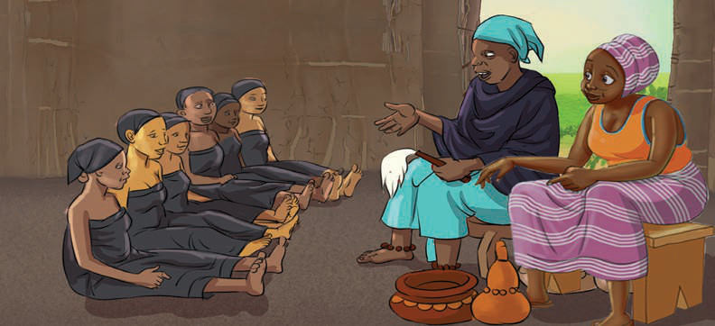
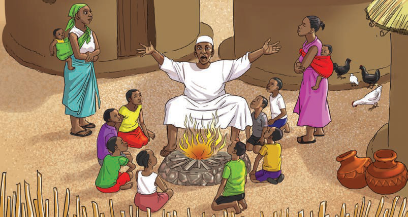

Kielelezo namba 2. Watoto wa kike wakifundishwa maadili unyagoni
Njia za masimulizi zilitumika kufundisha tabia njema na kuonya tabia mbaya. Pia, vitendawili, methali, mafumbo na misemo ilitumika kuwafundisha watoto maadili ya jamii zetu. Angalia mfano katika Kielelezo namba 3.

Kielelezo namba 3: Mzee akiwafundisha wajukuu zake maadili